The Wound That Wouldn’t Heal
Night had fallen heavy across the kingdom, but for Neet, sleep was a stranger.
Once, he was the 4.75-star General, Guardian of the Realm, Zen Master of Sunbeams. But a roach had breached the walls. A bark feud had stirred chaos. And worst of all — the King himself had lowered his gaze and stripped away a precious quarter star.
Sagar had called him over for his usual ear scratch that evening. Neet had accepted, but he was certain the missing star would be the first thing anyone noticed.
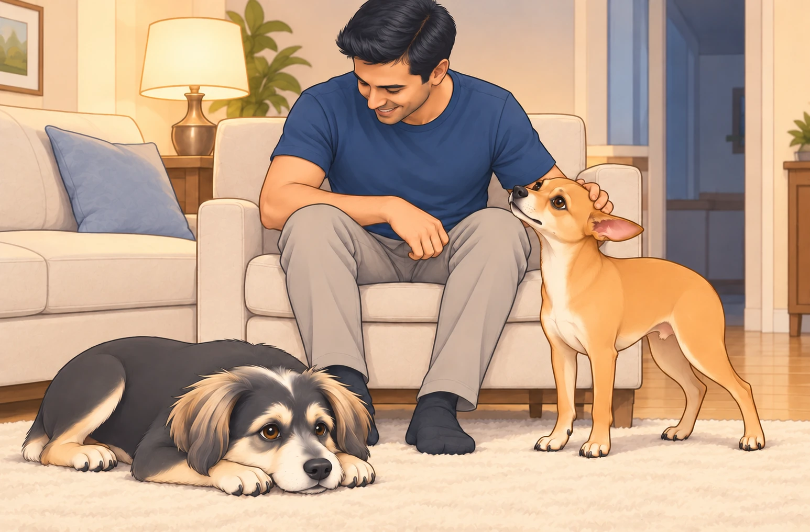
Neet lay in his closet bed, rehearsing tomorrow’s patrol. Each time he found a more heroic route, he stood up, turned around, and lay down facing it.
Buddy pulled a sock over one ear.
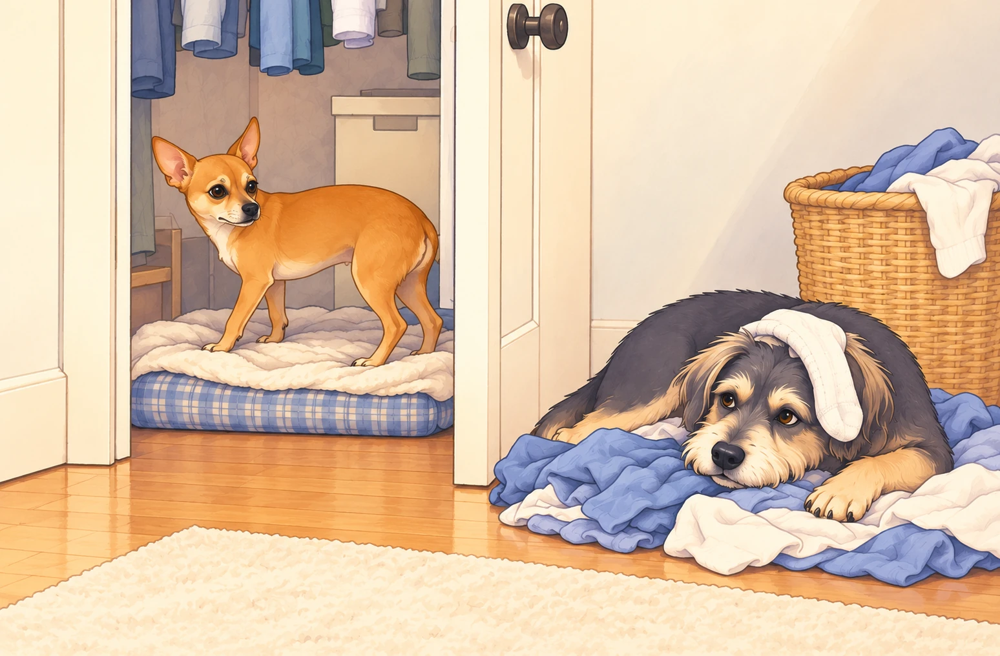
He wanted a quiet night followed by an excellent breakfast. Neither ambition required a star. Neet had now turned around four times, and the laundry pile was beginning to feel like the cheap seats at a parade.
“Are you practicing sleeping?” Buddy asked.
“Positioning.”
“Try horizontal.”
Neet lay down, facing tomorrow’s route. Buddy pushed the sock farther over his ear.
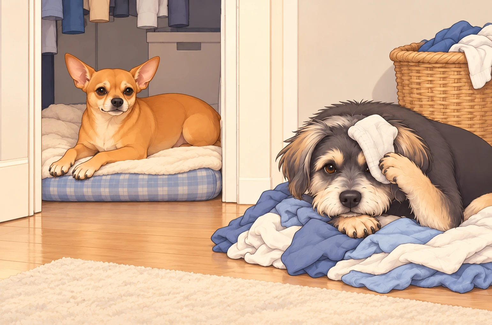
In a whisper that trembled with devotion, Neet vowed:
“Tomorrow, he will have to reconsider.”
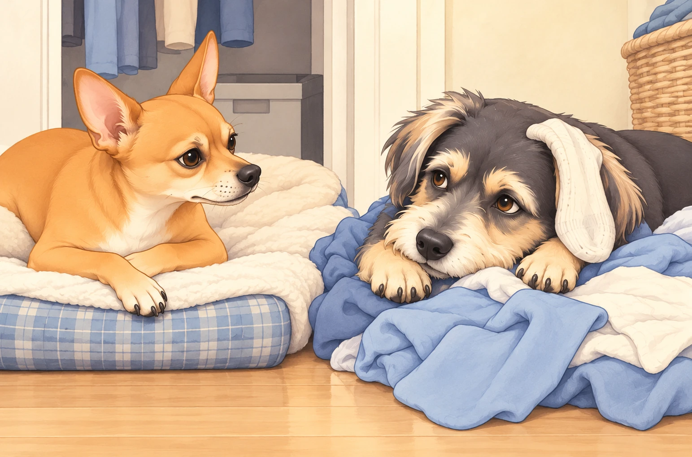
From the laundry pile, Buddy stirred, yawned, and muttered:
“You’re a lunatic.”
The Plastic Bag Siege
The next morning, the trial came swiftly.
A rogue plastic bag rode the breeze into the backyard, fluttering like a trespassing flag.
Heather spotted it and shrugged. “I’ll grab it later.”
Buddy squinted. “Looks like snacks.”
Buddy stepped onto the grass. If there were snacks in it, he meant to inspect them before Neet established a border.
But to Neet, this was destiny.
He looked toward Sagar first. A rescue performed without witnesses was practically housework.
With a war cry, he leapt from the deck, intercepting the bag midair. He dragged it down, shook it until it crumpled, and then paraded it across the lawn like a knight displaying a slain dragon.
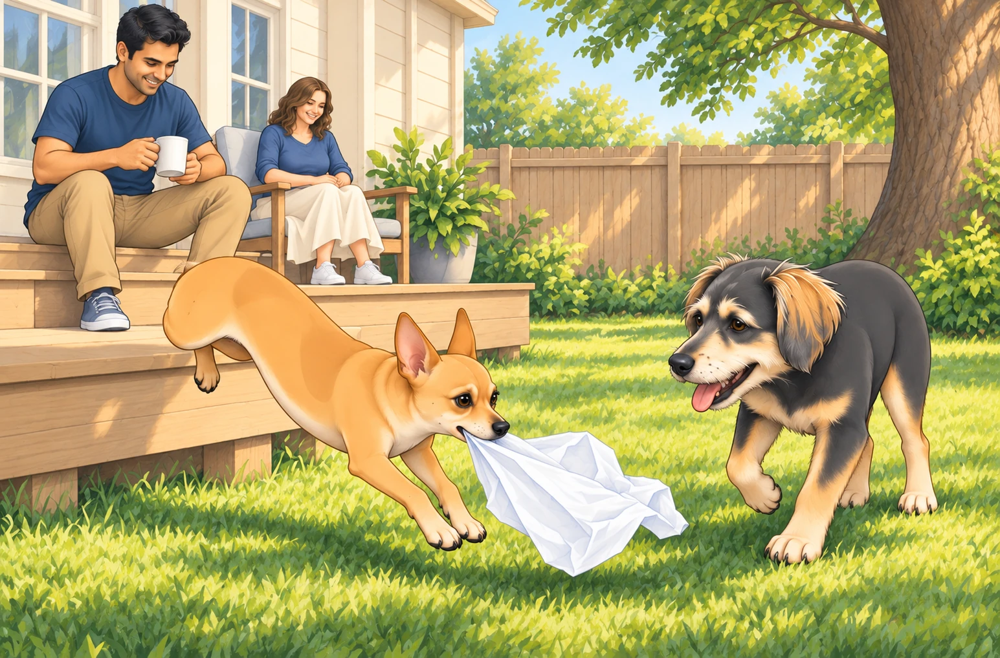
Sagar glanced up from his tea, unimpressed.
The bag caught another puff of wind. Neet pounced on it a second time, just in case the first victory hadn’t been seen.
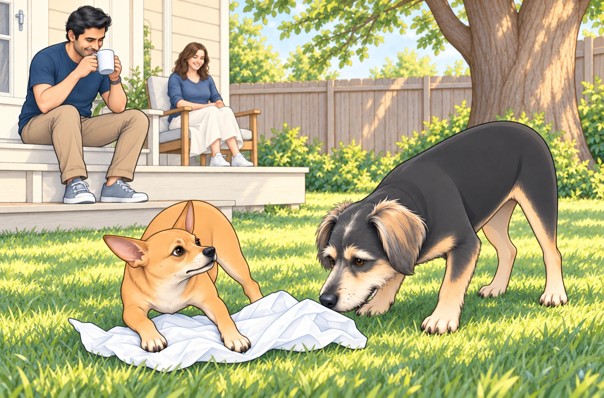
Buddy reached for a fluttering corner with his nose. Neet snatched the whole thing away.
“Evidence.”
“Possibly breakfast.”
“Stand back.”
Buddy stood back. The breeze lifted the loose corner again, and Neet spun to face it, releasing the part beneath his paw. Now two corners were moving.
Buddy planted a paw on one. The bag stopped fluttering.
Neet inspected the sudden peace, then looked toward the deck to make sure Sagar had witnessed his excellent command of reinforcements.
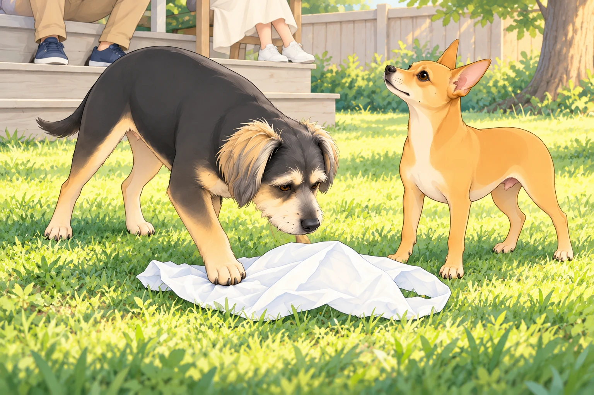
Buddy removed his paw. The corner rose.
Neet seized it immediately. Buddy decided breakfast would have to come from a less exhausting container.
Neet planted the bag by the trash and stared up at him, chest heaving. “Recovered and presented. For the record.”
Buddy sniffed the bag and lost interest. “You just assaulted recycling. Absolute lunatic.”
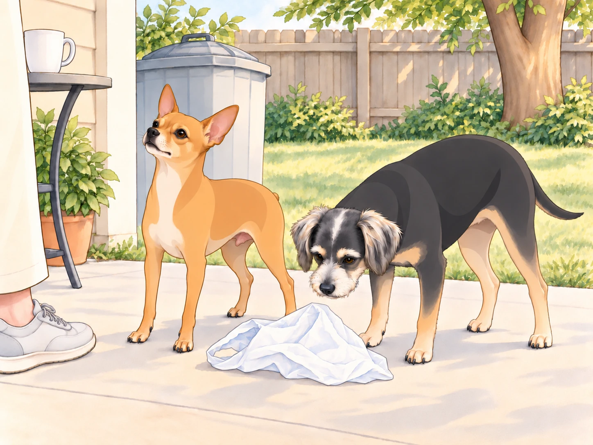
The Filing of the Evidence
Heather came down from the deck and picked up the bag. Neet followed her toward the trash, taking small, purposeful steps. Surely this was the presentation ceremony.
She lifted the lid. Neet stopped beside her, staring at the bag.
Heather paused. “You want to keep this?”
Neet stood even straighter.
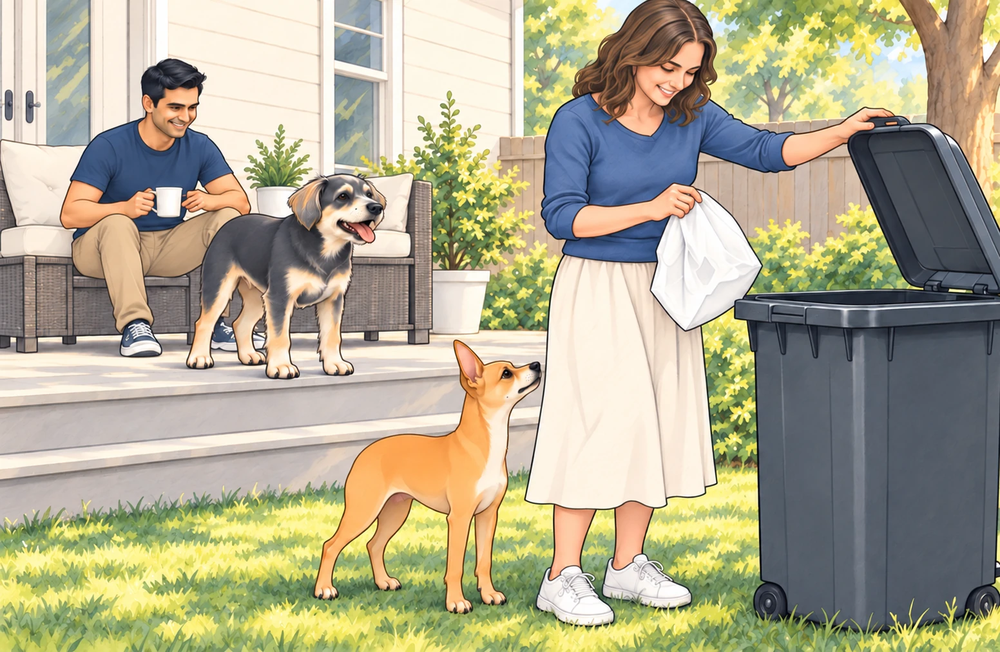
“Just for now,” Sagar said from the deck, smiling.
Heather folded it and put it on the patio table beneath a coaster. Then she ran a hand gently down Neet’s back before sitting beside Sagar.
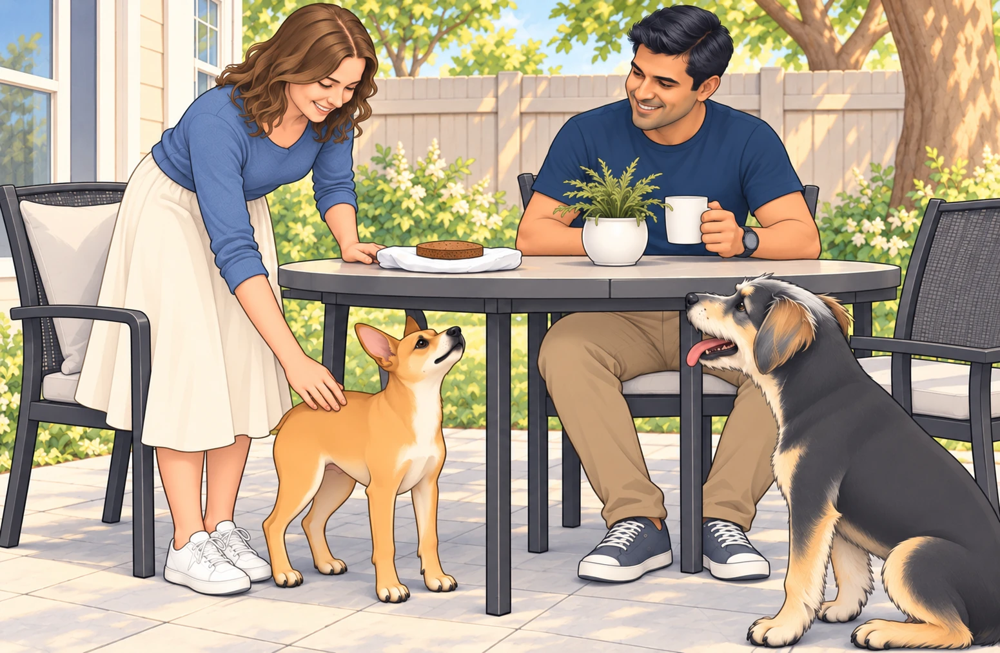
Neet stared at the coaster. His magnificent trophy was now keeping company with tea.
Buddy looked up at the table. “Very thorough victory.”
The bag could no longer flutter. It also looked considerably less heroic.
Neet waited beside the chair. The humans resumed their quiet conversation. Neither appeared to be reconsidering anything.
His next campaign would need something more impressive than a bag that fitted beneath a coaster.
The Amazon Inquisition
Later, an Amazon van pulled up.
The driver, blissfully unaware, placed a package on the porch.
Most dogs bark. Neet unleashed Ragnarok.
He hurled himself against the door, bellowing like a war trumpet. The driver stumbled backward, retreating to his van.
“NEET!” Heather called. “He’s delivering toilet paper!”
Buddy joined in gleefully. “SNACKS! IT’S SNACKS!”
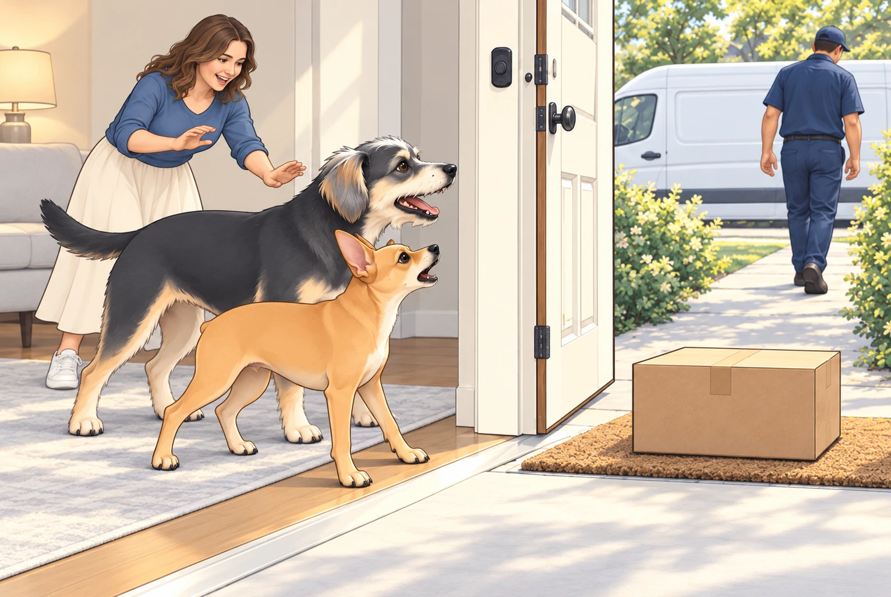
He hurried to the spot where Heather usually opened boxes. Whatever Neet was defending, Buddy intended to be first in line.
Heather brought the package through the door while Sagar kept Neet back with a steady hand. Buddy rose on his toes to sniff the passing corner. Cardboard. Tape. The promising smell of somewhere else.
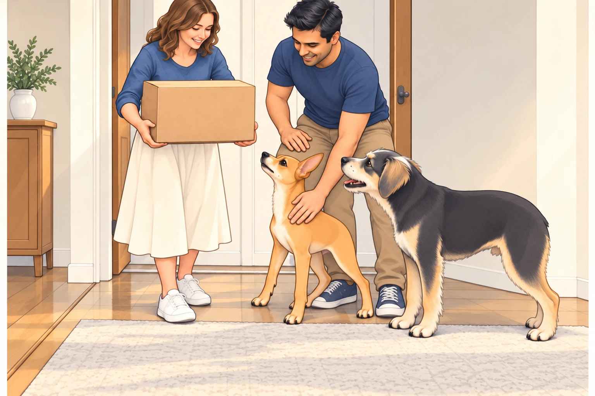
He followed it into the living room. Neet followed him. Both believed the delivery had come specifically for their department.
On the rug, Neet circled it like a paladin guarding sacred relics. Sniff, paw, sniff again.
Buddy waited beside Heather’s usual spot. She stood a few feet away, looking for the end of the tape. The box remained firmly under inspection.
Buddy tried the polite approach: sit, look at Heather, look at box. Heather smiled at him. Neet completed another circuit.
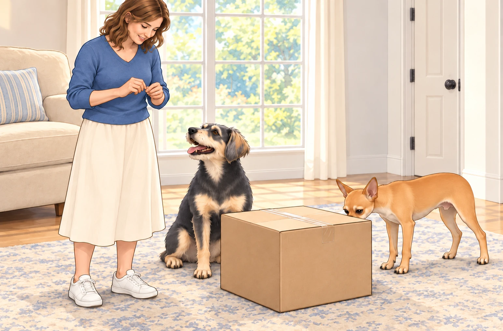
The polite approach had produced no snacks.
So Buddy put his nose against a lower corner and pushed. The box slid toward Heather. Excellent. He pushed again.
Neet stopped dead.
“The prisoner is moving.”
“The prisoner needs opening.”
Neet hurried around the front and planted himself between the box and Heather. Buddy had delivered the package directly into another checkpoint.
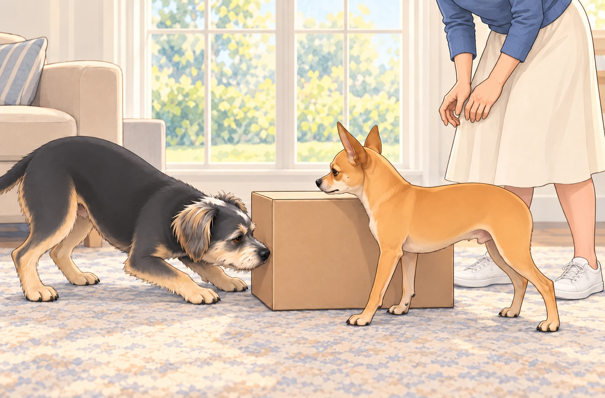
“Bud, leave it there,” Heather said, kneeling beside them. She put a hand on the box to steady it. “I’ve got it.”
Buddy sat back. Neet sniffed the corner he had touched, adding an unexpected internal investigation to the external one.
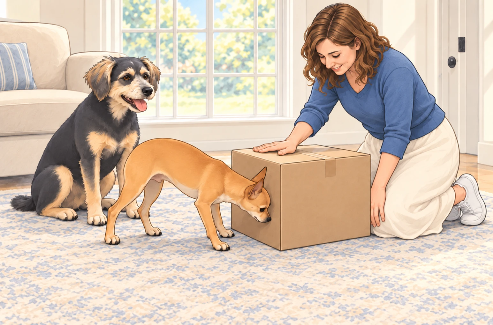
Buddy looked toward Sagar. The general was not the only dog here capable of a mistaken decision. He lay down before anyone requested a statement.
Only after thirty minutes of vigil did Neet step back, eyes darting to Sagar.
Heather opened the flaps. Buddy put his nose over the edge, inspected the white rolls, then inspected the bottom corners for a smaller, better delivery.
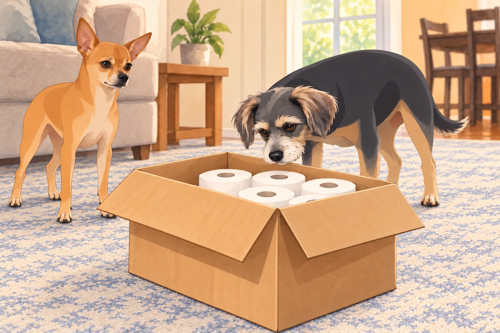
Heather held a flap out of his way so he could finish discovering this for himself.
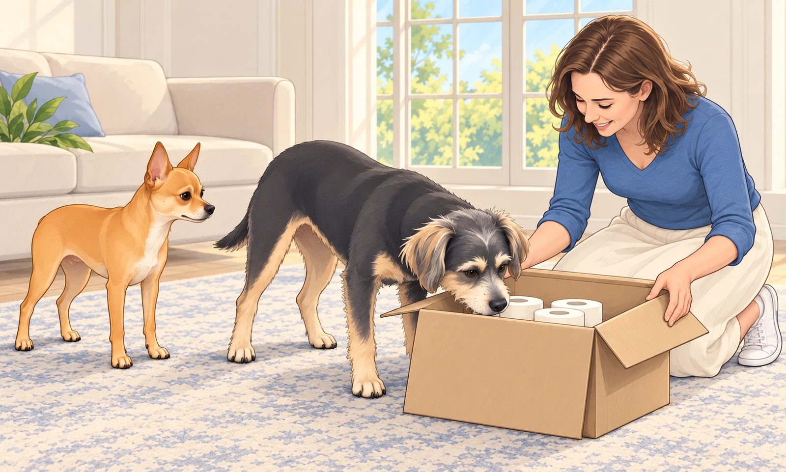
“Nothing tucked underneath, sweetheart.”
Buddy checked underneath anyway. Heather waited. Then he withdrew his nose and sat on her foot.
She rubbed his chest. “Disappointing, I know.”
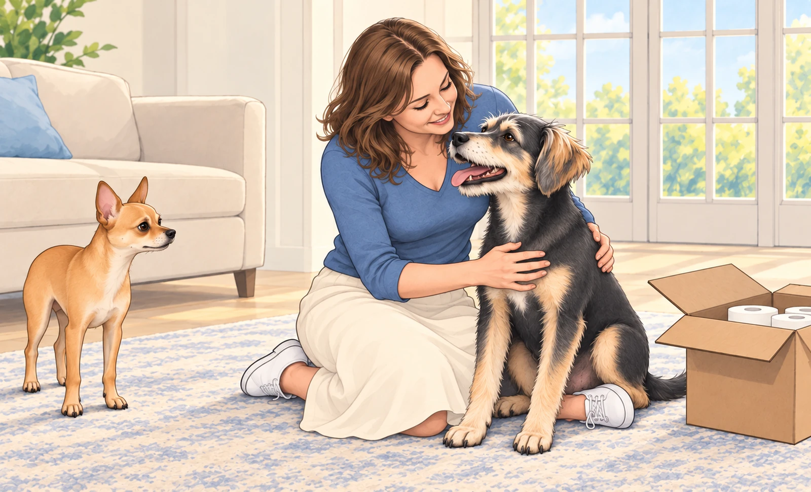
Sagar lifted out a roll, carried it down the hall, and returned without convening anything.
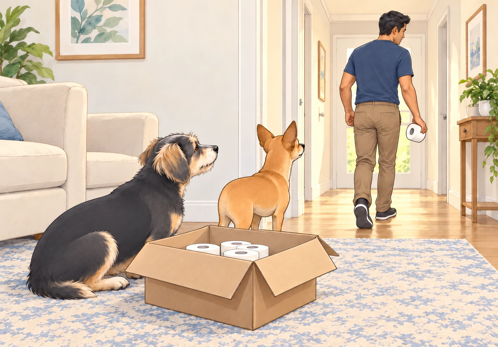
Sagar exhaled, unimpressed.
Neet looked from Sagar to the box. Toilet paper. Not even an interesting capture.
Buddy flopped down. “Next time, wait until we know what’s in it.”
“You barked too.”
“Based on information available at the time.”
The Squirrel Siege
By dusk, the final trial appeared: a squirrel, bold and twitchy-tailed, perched upon the fence.
Neet froze, hackles rising. This was no ordinary squirrel. This was The Intruder Supreme.
With a warrior’s bark, he charged. The squirrel darted into the oak tree.
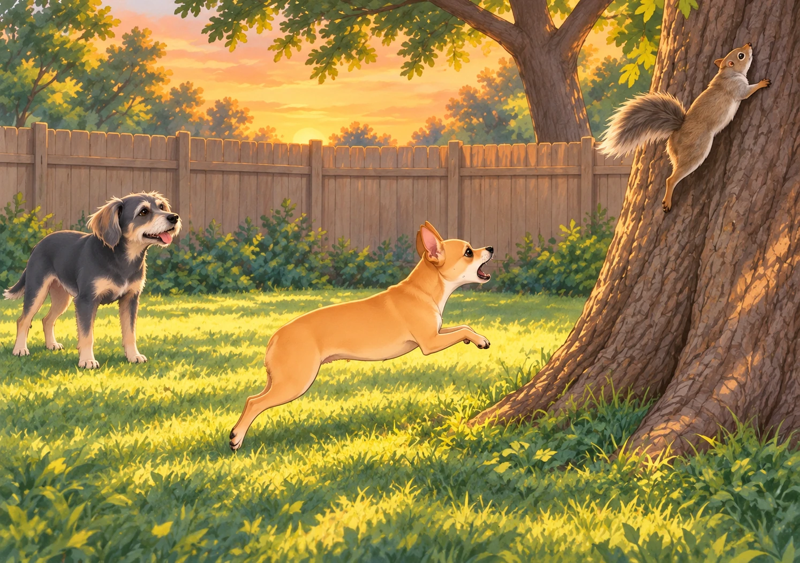
Neet could not follow upward, but he circled its base, relentless, orbiting for forty-five minutes.
Neighbors passed by. Martha & Sally heckled from their yard.
The squirrel moved to the other side of the trunk. Neet reversed direction. A moment later, it moved back.
Buddy watched two changes of command before choosing a stick. He sprawled in the grass and began to chew.
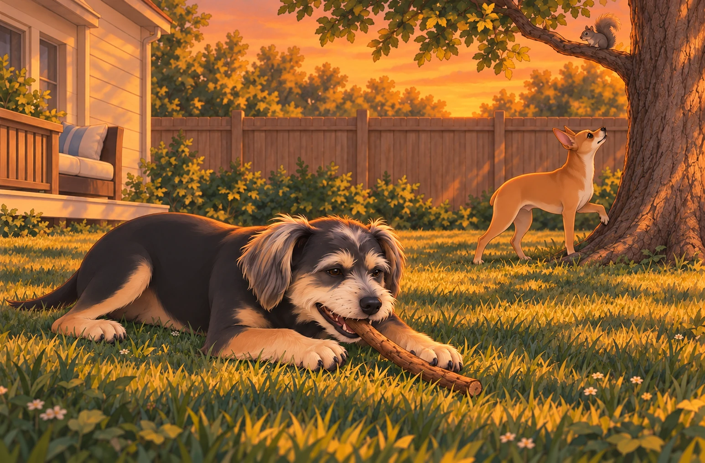
After the bag and the box, here was an object that fulfilled its advertised purpose. It was a stick. It tasted like a stick. It contained no toilet paper.
Neet swept past, paused to bark upward, then set off again. Buddy shifted the stick between his paws. He wanted to enjoy the evening with his brother, but his brother was currently an orbit.
He picked up the stick and approached the trunk.
Neet stopped long enough to look at him. Buddy put it down. This was progress.
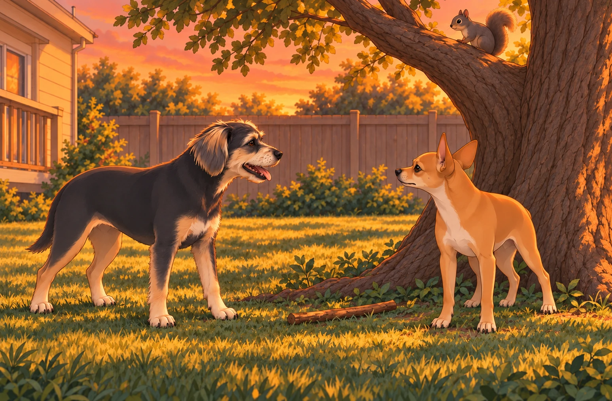
The squirrel rustled overhead. Neet lunged around the oak to reacquire it. Buddy had to hop backward, leaving the stick where he had dropped it.
The general came around again and nearly stepped on it.
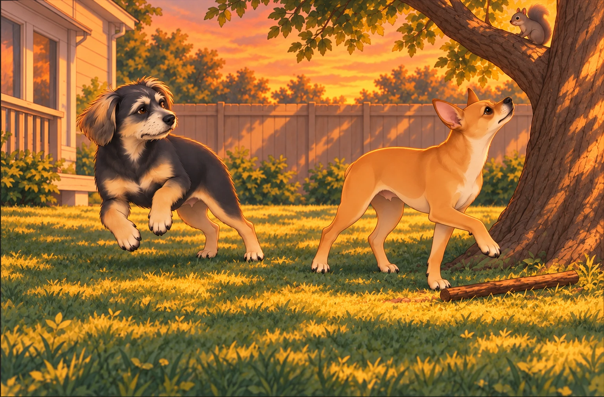
Buddy snatched it clear. Bringing his excellent evening into Neet’s patrol had made both worse.
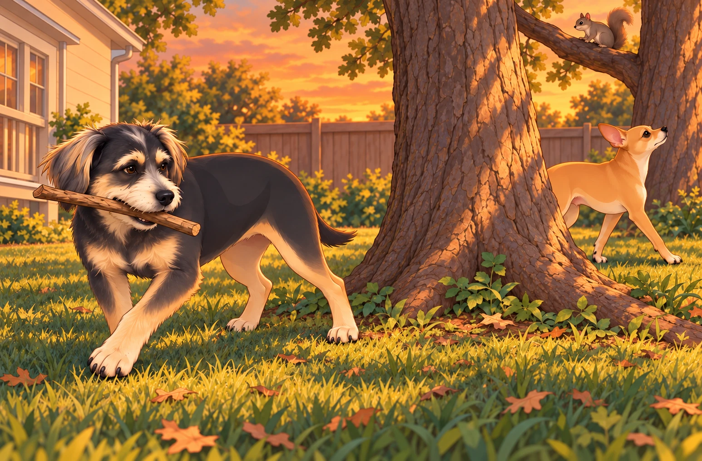
He carried it back to the grass and lay down where Neet could see him without changing course.
“You’re just spinning in circles.” Buddy pushed the stick toward him. “Come here. Try this.”
Buddy waited for Neet’s next lap to make the offer again. Neet passed him without slowing. Buddy pulled the stick out of the patrol route.
Heather came down the steps with the water bowl. She set it in the shade and called Neet over. He looked toward her, then up at the squirrel, which had just moved again.
Sagar joined her at the deck rail. “It’ll still be a squirrel after a drink.”
Neet’s next circuit widened toward the bowl. He drank quickly, keeping one ear aimed at the tree, then hurried back before the enemy could take advantage of hydration.
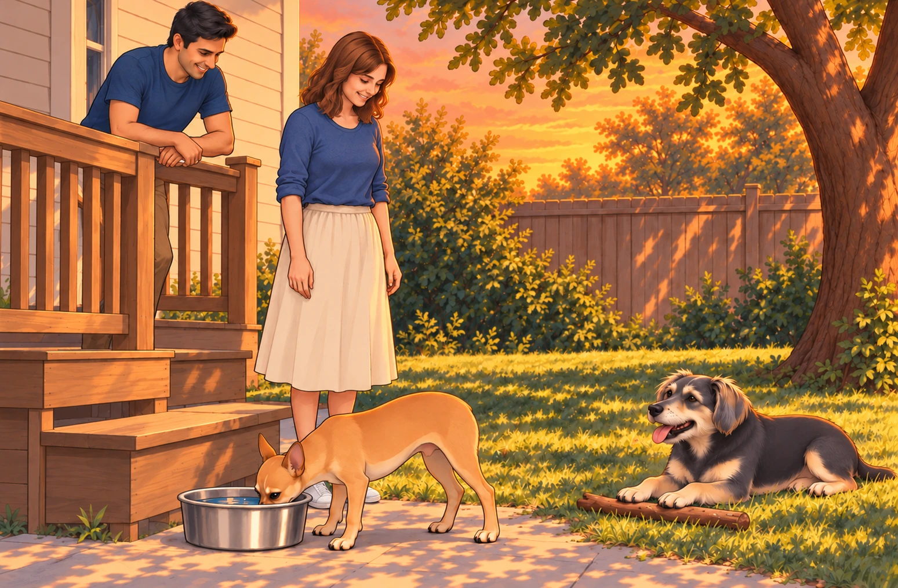
Buddy stayed with the stick. The general would have to come to it.
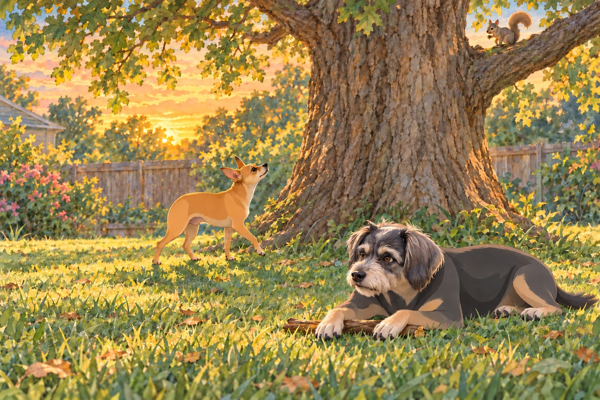
But Neet didn’t stop. His lungs burned, his paws ached, but his eyes never left the branches. When the squirrel finally vanished into the canopy, he marched back to the deck, body quaking, tail held high.
He sat before Sagar and waited. Behind him, Buddy left the rejected stick by the water bowl.
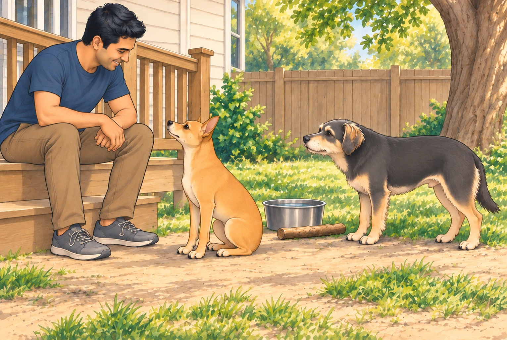
The Withheld Verdict
That evening, Neet positioned himself in the living room, rigid as a knight awaiting knighthood. He had three incidents to submit.
Heather had brought the folded bag in from the patio table. Neet checked that it was included before taking his place.
Heather looked at Sagar. “He’s been working… very hard.”
Sagar put down his mug and looked at the plastic bag, the delivery box and the stick Buddy had brought inside.
Neet sat a little taller when Sagar looked at each object. Bag. Box. Stick. Three items, three campaigns. He did not intend to complicate the submission by mentioning that one belonged to Buddy.
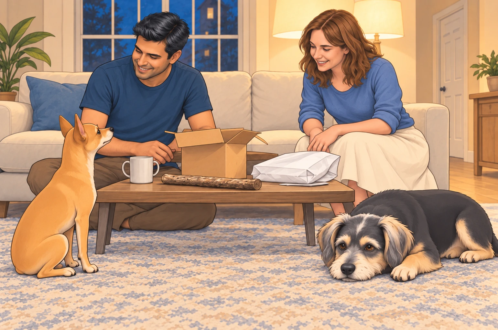
Heather lifted the stick. “Is this part of the evidence?”
Buddy stood up at once. That was his.
Heather lowered it for him to take. Buddy paused with his nose against her fingers. He could carry it straight to his own bed and finally enjoy a quiet object in a quiet place.
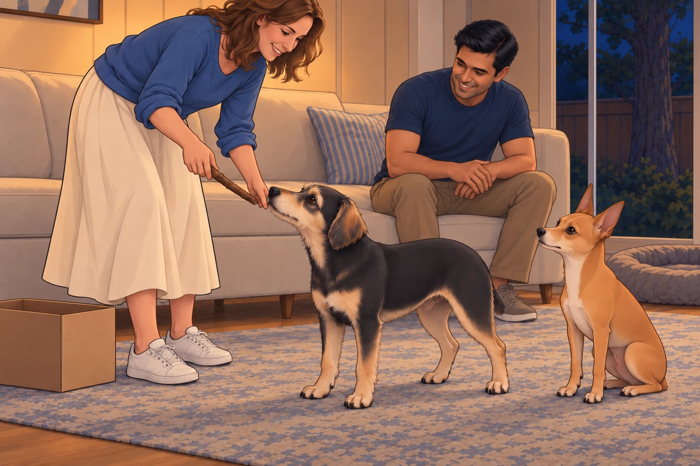
Beside him, Neet’s paws were planted neatly together. The general watched Sagar so intently he hadn’t noticed the evidence leaving.
Buddy waited. The stick could wait too.
Neet leaned forward, ears sharp, waiting.
Finally, Sagar spoke.
“The tribunal acknowledges your efforts. But the matter of restoration… will be decided in time. The star remains withheld.”
Neet’s ears fell. The quarter star remained lost.
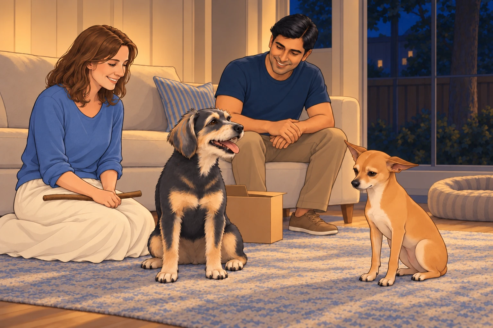
Heather set the stick down. Buddy recovered it, carried it back to Neet, and nudged it toward him again.
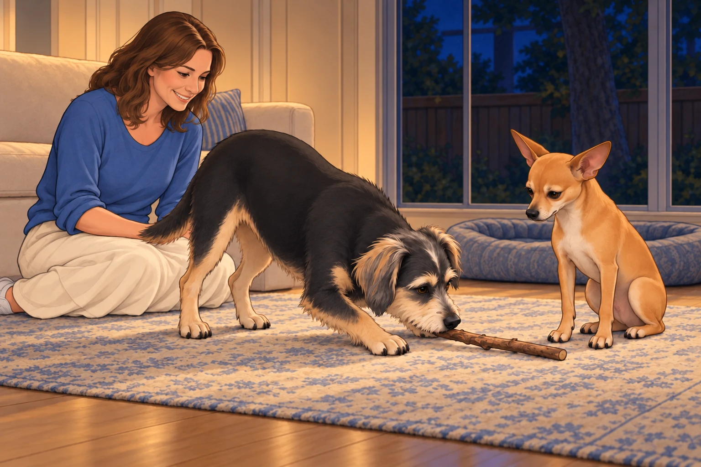
“You can stop for tonight, though.”
Neet looked at the stick. It had failed to qualify as military evidence and was being offered again anyway.
Sagar reached down and rested a hand beside him. Heather settled on the rug, leaving a place for Buddy between herself and Neet.
Buddy sat in the space she had made.
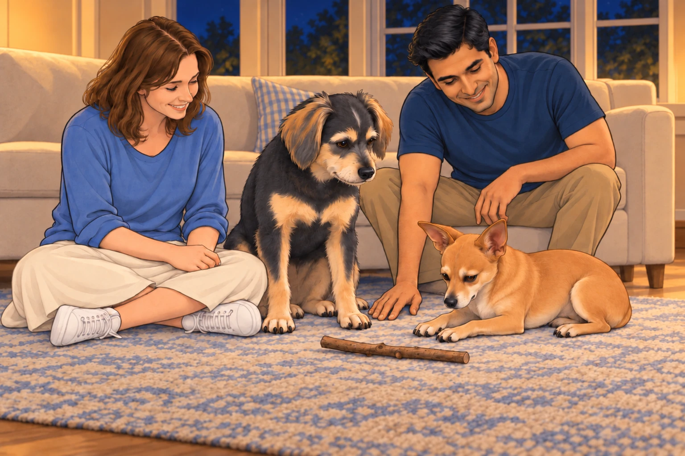
Neet lowered his head to the floor, a knight denied his armor, but his eyes burned with fresh determination.
The star had not returned. Neet still meant to earn it.
And until then… Neet would stop at nothing.
Except the stick. He rested his chin beside it, and Buddy settled at his shoulder.
Epilogue: The Lunatic’s Oath
As the kingdom settled into sleep, Buddy whispered from his dryer-bed:
“Still 4.25 stars. Still need sleep.”
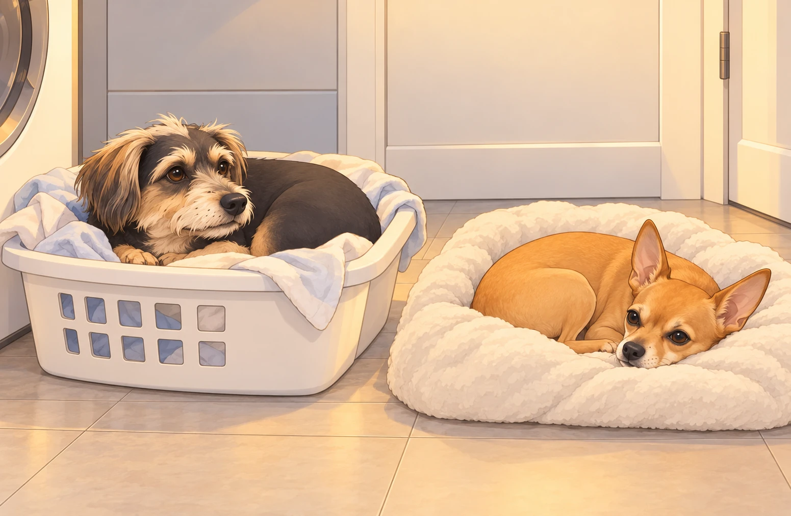
Neet curled tighter on his blanket, whispering into the shadows:
“One day, my King will see. And when he does… the crown of five stars shall be mine.”
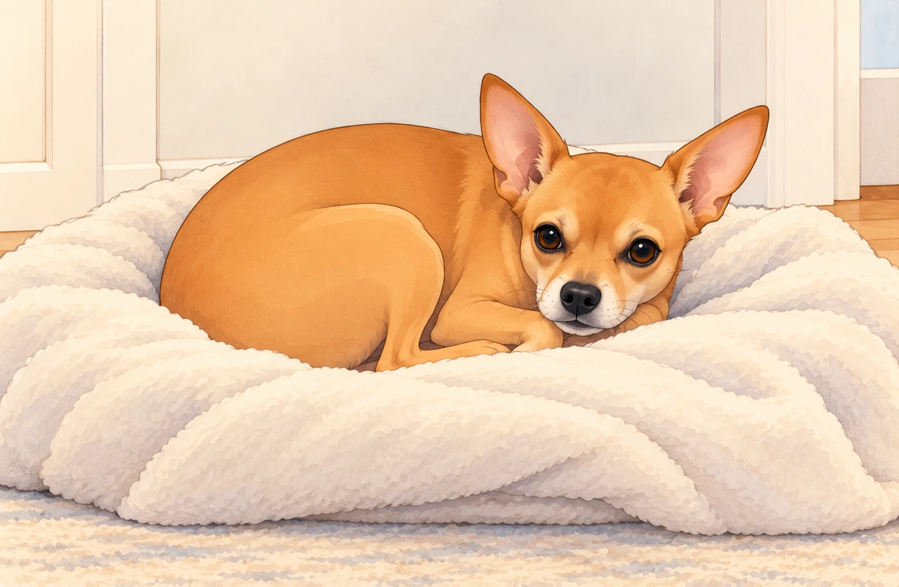
Somewhere outside, the squirrel twitched its tail.
The war was far from over.
For the moment, however, the general had fallen asleep halfway through planning it.
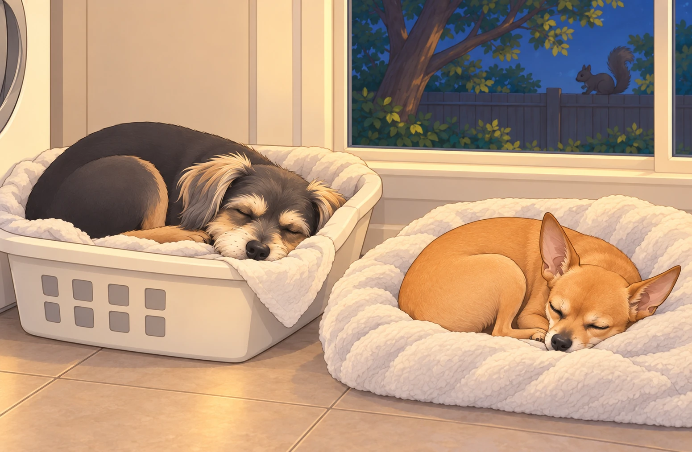